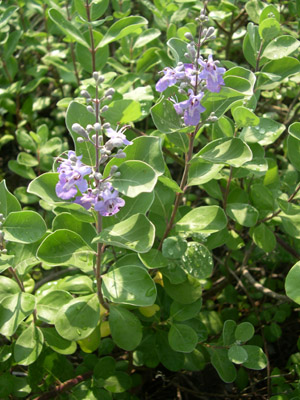

Previous || Next || Return to Mystery Plants || USC Herbarium
This Week's Mystery Plant | Dr. John B. Nelson Curator, USC Herbarium |
|
We are back at the beach, and this time we have a plant that is causing some alarm bells to start ringing. Loudly. It is a shrub that grows from long, viny runners, then sending up bushy branches to about knee-high. Its leaves are round and fairly tough, green on the top and prominently whitish below. The leaves are very fragrant when crushed (they remind me of Eucalyptus oil). The handsome flowers are produced on the upright branches. Each flower produces a bright blue-purple, tubular, two-lipped corolla emerging from the green, cup-like calyx. In the late summer and fall, each flower will produce one or more dry, nut-like fruits. It's in full bloom now, and you really can't mistake it for any other species. This plant, which is yet another Asiatic introduction, has gained great popularity with landscapers along southern beaches. It is tolerant of salt, sun, and sand, and it is useful in stabilizing dunes. It also makes a fine, fragrant hedge when properly clipped. There is a very dark side, however. This species is EXTREMELY invasive, and is now beginning to cover natural dunes. In South Carolina, it has become a serious pest along much of the Grand Strand, as far south as Georgetown. (The photograph shows a plant blooming last weekend at North Litchfield.) The plants are rapidly crowding out native dune and beach vegetation. Furthermore, this species is harmful to nesting turtles: female turtles are unlikely to find suitable egg-laying sites in areas infested with this plant. Gardeners along the coast should strongly consider growing other ornamental species. It turns out that the Baruch Institute of Clemson is investigating many aspects of the control of this plant…you can get further information from Jack Whetstone at Baruch, at 843-546-6321. It is a pretty plant, but it is a bad one. That makes it "pretty bad." |
 Photo by John Nelson |